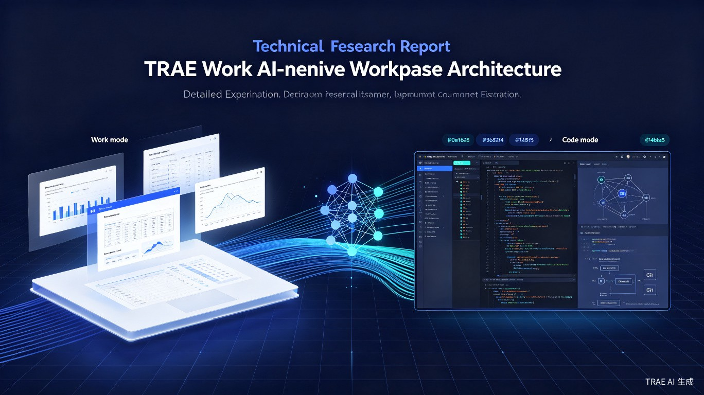

AI-Native Workspace 的双模式设计哲学与工程实现解析
TRAE Work 是字节跳动推出的 AI-Native Workspace，定位为"AI 原生工作空间"。与传统 IDE 或办公软件不同，TRAE Work 从底层架构上围绕大语言模型（LLM）的能力进行设计，将 AI 作为核心交互媒介而非辅助工具。[1]
产品核心理念可以概括为："让 AI 成为工作的主体，人类成为工作的指挥者"。这一理念体现在两个层面：
关键洞察：TRAE Work 不是"带有 AI 功能的编辑器"，而是"以 AI 为内核的工作操作系统"。这一设计哲学决定了其架构的每个层面都围绕 AI 的能力边界和交互范式进行优化。
TRAE Work 采用 Web + Desktop + Mobile 三端统一架构，确保用户可以在任何设备上获得一致的 AI 工作体验。[2]
| 平台 | 定位 | 核心能力 | 适用场景 |
|---|---|---|---|
| Web | 云端入口 | 免安装、实时同步、跨设备访问 | 快速启动、轻量任务、协作共享 |
| Desktop | 生产力主战场 | 本地文件系统、Git 集成、终端访问 | 深度开发、复杂项目、本地调试 |
| Mobile | 移动 companion | 语音交互、快速查看、轻量编辑 | 通勤、会议间隙、紧急处理 |
三端共享同一套 Cloud Agent 后端，确保任务状态、对话历史、文件变更在所有设备间实时同步。Desktop 端额外拥有 Local Agent，可直接操作本地文件系统和开发工具链。
TRAE Work 最核心的架构创新是 Work 模式 与 Code 模式 的双模式设计。这不是简单的"两个界面皮肤"，而是两套完整的工作范式：[3]
graph TB
A[TRAE Work] --> B[Work Mode]
A --> C[Code Mode]
B --> B1[文档处理]
B --> B2[数据分析]
B --> B3[演示制作]
B --> B4[网页构建]
C --> C1[代码编写]
C --> C2[调试测试]
C --> C3[版本控制]
C --> C4[代码审查]
B -.->|共享| D[AI Agent 内核]
C -.->|共享| D
D --> D1[SOLO Agent]
D --> D2[MCP 扩展]
D --> D3[Skills 能力]
两种模式共享底层的 AI Agent 内核（SOLO Agent、MCP 扩展、Skills 能力），但在交互层、工具链、输出形式上存在本质差异：
| 维度 | Work 模式 | Code 模式 |
|---|---|---|
| 目标用户 | 产品经理、设计师、分析师、运营 | 软件工程师、技术负责人 |
| 核心产出 | 文档、表格、幻灯片、网页 | 代码、配置文件、技术文档 |
| 交互语言 | 自然语言为主，富文本编辑 | 自然语言 + 代码混合，IDE 操作 |
| AI 角色 | 内容创作者、数据分析师 | 编程助手、代码审查者 |
| 工具集成 | 飞书、Figma、数据源 | Git、终端、测试框架、CI/CD |
| 执行环境 | 云端沙盒 | 本地环境 + 云端沙盒 |
Work 模式面向 非技术开发人员，包括产品经理、设计师、数据分析师、运营人员等。其设计假设是：这些用户不具备编程能力，但需要借助 AI 完成复杂的知识工作。[4]
核心使用场景包括：
Work 模式的核心是一个 AI 原生富文本编辑器。与传统编辑器"先写内容再让 AI 修改"不同，TRAE Work 的编辑器支持"边写边生成"：
针对数据分析场景，Work 模式内置了 Data Workspace：
Work 模式包含一个 Visual Web Builder，允许非技术人员通过对话生成网页：[5]
设计亮点：Work 模式的网页构建器模糊了"文档"和"应用"的边界。用户可以在同一个对话中，从"写一个产品介绍"自然过渡到"把这个介绍做成一个可交互的网页"，AI 会自动处理内容到代码的转换。
Work 模式支持多种输入方式，降低用户使用门槛：
自然语言指令，支持中文和英文
语音讨论模式，支持实时语音交互
文档、图片、数据文件的上传与解析
输入 URL，AI 自动抓取并分析网页内容
Code 模式（即 Coderwork）面向 软件开发人员，提供完整的 AI 驱动开发环境。其设计目标是让开发者通过自然语言完成从需求理解到代码实现的全流程。[6]
核心使用场景：
TRAE Code 模式内置了 CUE（Context Understanding Engine），这是一个专为代码场景设计的上下文理解引擎：[7]
Code 模式提供了多种 AI 驱动的代码编辑方式：
| 功能 | 触发方式 | 能力描述 |
|---|---|---|
| Inline Edit | 选中代码 + 自然语言指令 | 对选中代码进行局部修改（重构、优化、修复） |
| Generate Code | 注释或函数签名 | 根据意图生成完整函数或类实现 |
| Explain Code | 选中代码 + /explain | 生成代码的自然语言解释和流程图 |
| Generate Tests | 选中函数 + /test | 自动生成单元测试用例 |
| Fix Issues | 错误提示或 /fix | 分析错误并生成修复代码 |
Code 模式深度集成了 Git 工作流，AI 可以参与版本控制的各个环节：[8]
Code 模式提供了 AI 驱动的终端：
安全设计：所有 AI 生成的命令默认在 Sandbox 中执行，涉及写操作或敏感命令时需要用户确认。用户可以在设置中调整自动执行的信任级别。
SOLO Agent 是 TRAE Work 的核心 AI 执行引擎，负责理解用户意图、规划任务、执行操作、验证结果。其架构设计体现了 "自主但受控" 的 AI 代理哲学。[9]
SOLO Agent 采用两级规划机制，根据任务复杂度自动选择规划策略：
graph LR
A[用户输入] --> B{任务复杂度}
B -->|简单任务| C[Plan 模式]
B -->|复杂任务| D[Spec 模式]
C --> C1[直接生成执行计划]
C --> C2[逐步执行]
D --> D1[生成 Spec 文档]
D --> D2[用户确认 Spec]
D --> D3[基于 Spec 生成 Plan]
D --> D4[执行 Plan]
C2 --> E[结果验证]
D4 --> E
E --> F[输出结果]
适用于相对简单的任务（如"给这个函数添加异常处理"）：
适用于复杂的系统级任务（如"设计并实现一个用户认证模块"）：[10]
设计 rationale：Spec 模式引入了"人类在环"（Human-in-the-loop）机制，在复杂任务的关键决策点（架构设计、接口定义）强制要求人类确认，避免 AI 在错误方向上自主执行过远。这是 TRAE Work 安全架构的核心设计之一。
为了支持多任务并行执行和任务隔离，TRAE Work 采用了 Git Worktree 机制：[11]
graph TB
A[主仓库 main] --> B[Worktree 1]
A --> C[Worktree 2]
A --> D[Worktree 3]
B --> B1[任务 A 执行环境]
C --> C1[任务 B 执行环境]
D --> D1[任务 C 执行环境]
B1 -.->|独立文件系统| E[隔离沙盒]
C1 -.->|独立文件系统| E
D1 -.->|独立文件系统| E
Worktree 机制的核心优势：
TRAE Work 支持 多任务并行，用户可以同时发起多个独立任务：[12]
TRAE Work 的扩展性通过四层机制实现：MCP 协议、Skills 系统、Hooks 机制 和 Rules 规则。这四层从底层协议到用户配置，构成了完整的扩展生态。[13]
MCP 是 TRAE Work 与外部服务通信的标准协议，允许 AI 模型安全地访问外部工具和数据源。[14]
graph LR
A[TRAE Work AI Agent] -->|MCP Protocol| B[MCP Server]
B --> C[外部服务 A]
B --> D[外部服务 B]
B --> E[外部服务 C]
C --> C1[GitHub API]
D --> D1[飞书 API]
E --> E1[Figma API]
MCP 的核心设计原则：
官方提供的 MCP Server 包括：
仓库管理、Issue/PR 操作、代码搜索
文档读写、表格操作、消息发送
设计文件读取、组件信息获取
浏览器自动化、网页测试、截图
Skills 是 TRAE Work 的 可复用能力模块，允许用户定义特定领域的 AI 工作流。[15]
Skill 的核心结构（以 Skill.md 文件定义）：
# Skill: 代码审查助手
## 描述
自动审查代码变更，发现潜在问题并给出改进建议。
## 触发条件
- 用户发送代码片段
- Git diff 被检测到
## 执行流程
1. 分析代码变更范围
2. 检查代码风格和最佳实践
3. 识别潜在 bug 和安全问题
4. 生成审查报告
## 输出格式
- 问题分级：严重/警告/建议
- 具体位置：文件路径和行号
- 修复建议：可执行的代码修改Skills 的设计特点：
Hooks 是 TRAE Work 的 事件驱动扩展机制，允许在特定事件节点触发自定义操作。[16]
| Hook 节点 | 触发时机 | 典型用途 |
|---|---|---|
pre-message |
用户发送消息前 | 消息预处理、敏感信息过滤 |
post-message |
AI 回复生成后 | 回复后处理、格式转换 |
pre-command |
AI 执行命令前 | 命令审计、权限检查 |
post-command |
命令执行完成后 | 结果分析、日志记录 |
on-file-change |
文件发生变更时 | 自动索引更新、触发构建 |
on-task-complete |
任务完成时 | 通知发送、报告生成 |
Hooks 的配置方式：
// .trae/hooks.json
{
"hooks": [
{
"event": "pre-command",
"filter": "rm -rf|sudo",
"action": "require-approval"
},
{
"event": "on-task-complete",
"action": "webhook",
"url": "https://hooks.slack.com/..."
}
]
}Rules 是 TRAE Work 的 AI 行为约束机制，用于规范 AI 的回复风格、代码规范、安全策略等。[17]
Rules 分为两个层级：
.trae/rules.md 中典型 Rules 内容：
# TRAE Rules
## 代码规范
- 使用 TypeScript 严格模式
- 函数命名使用 camelCase
- 优先使用 async/await 而非回调
## 回复风格
- 技术解释要简洁，避免冗长
- 代码示例必须包含类型定义
- 涉及安全问题时使用警告框
## 安全策略
- 禁止生成包含密钥的代码
- 数据库操作必须使用参数化查询
- 用户输入必须进行校验TRAE Work 的安全架构围绕 "最小权限原则" 和 "人类在环确认" 两个核心原则设计。[18]
所有 AI 生成的命令和代码在 Sandbox 中执行，提供多层隔离：
TRAE Work 提供了三级自动执行控制：[19]
| 级别 | 行为 | 适用场景 |
|---|---|---|
| 严格模式 | 所有命令都需要手动确认 | 生产环境、敏感项目 |
| 平衡模式 | 读操作自动执行，写操作需确认 | 日常开发（默认） |
| 信任模式 | 低风险命令自动执行 | 个人项目、快速原型 |
TRAE Work 提供了 Privacy Mode（隐私模式），确保敏感数据不被上传到云端：[20]
TRAE Work 的数据存储遵循 "本地优先、云端可选" 的原则：[21]
TRAE Work 支持多层次的团队协作：[22]
TRAE Work 支持 定时自动化任务，基于 cron 表达式调度：[23]
TRAE Work 支持 Voice Discussion（语音讨论）模式，允许用户通过语音与 AI 进行实时交互：[24]
TRAE Work 通过 MCP 协议和 Webhook 支持广泛的第三方集成：[25]
代码仓库、Issue、PR、Actions 集成
文档、表格、消息、审批集成
设计稿读取、组件信息、设计 token
消息通知、频道集成、Bot 交互
通过对 TRAE Work 官方文档的深入调研，可以总结出以下核心设计洞察：
洞察 1：AI-Native 不是 AI-Enhanced
TRAE Work 的最大架构特点是"以 AI 为内核"而非"以 AI 为插件"。传统工具是在现有软件上添加 AI 功能，而 TRAE Work 是从零开始围绕 AI 的能力边界设计整个工作空间。这体现在：对话是主要交互方式、Agent 是执行主体、自然语言是主要输入。
洞察 2：双模式是用户心智模型的映射
Work 模式 vs Code 模式的分割，本质上是对"知识工作者"和"软件开发者"两种用户心智模型的尊重。两种用户的工作语言、工具链、产出形式截然不同，强行统一会降低双方体验。双模式设计让每种用户都能获得最优体验。
洞察 3：安全是 AI 自主的前提
TRAE Work 的 SOLO Agent 可以自主执行复杂任务，但这种自主性建立在严格的安全架构之上：Sandbox 隔离、分级自动执行控制、人类在环确认、隐私模式。没有这些安全机制，AI 的自主性将不可接受。
| 架构层面 | 设计选择 | 优势 |
|---|---|---|
| 执行模型 | Cloud Agent + Local Agent 混合 | 兼顾云端算力和本地数据安全 |
| 任务隔离 | Git Worktree | 轻量、原生、可版本控制 |
| 扩展协议 | MCP（Model Context Protocol） | 标准化、安全、类型安全 |
| 能力复用 | Skills（Markdown 定义） | 低门槛、可版本控制、可分享 |
| 事件扩展 | Hooks（JSON 配置） | 声明式、灵活、可审计 |
| 行为约束 | Rules（分层配置） | 全局统一 + 项目定制 |
TRAE Work 的架构设计中也存在一些值得关注的权衡：
基于当前架构，TRAE Work 可能的演进方向包括：
结语：TRAE Work 的架构设计代表了一种新的软件范式——AI-Native Workspace。它不是将 AI 塞进现有工具，而是围绕 AI 重新发明了工作空间。双模式、SOLO Agent、MCP、Skills、Hooks 等设计共同构成了一个完整的 AI 工作操作系统，为未来的知识工作提供了新的可能性。